- Searching for Landscapes - blog link
- Selected landscape photos from hikes and travels.
- Drawing Landscapes - blog link
- Ink and watercolor paintings of various landscape photos I have previously taken.
- Digital Science Art - blog link
- A new transition to digital art with an emphasis on science.
- Animated Gifs
- Timelapsed photos made into animated gifs.
- Graphic Design
- Small miscellaneous graphic design projects.
Creative
Searching for Landscapes
More photos can be found on my tumblr blog at best-views.tumblr.com.
 A sunset view of the Golden Gate Bridge from Battery Godfrey in San Francisco, California.
A sunset view of the Golden Gate Bridge from Battery Godfrey in San Francisco, California.
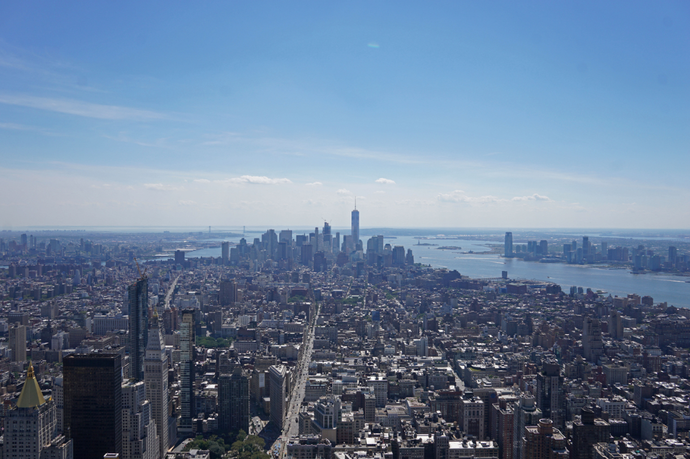A view of lower Manhattan from the top of the Empire State Building in New York City on a clear summer's day.
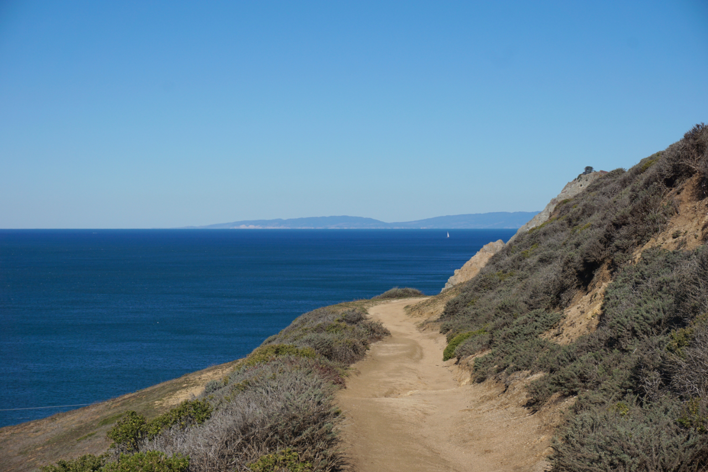A beautiful view looking towards the Marin Headlands from McNee Ranch State Park, CA.
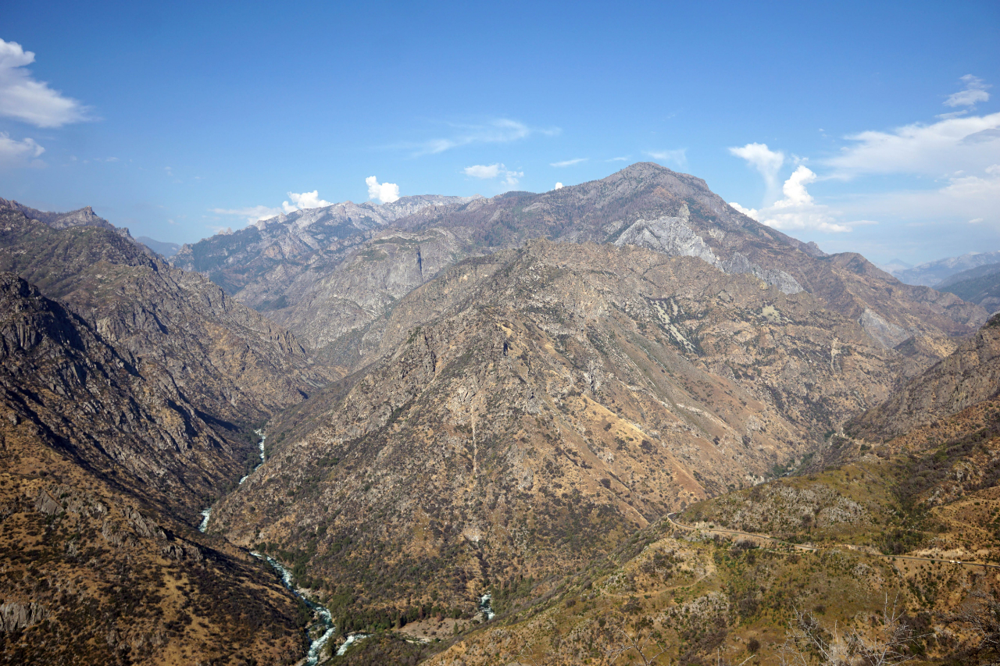A wide view of the canyons near Junction View on highway 180 in Kings Canyon National Park, CA.
Drawing Landscapes
More pieces from this project can be found on my tumblr blog at drawn-views.tumblr.com.
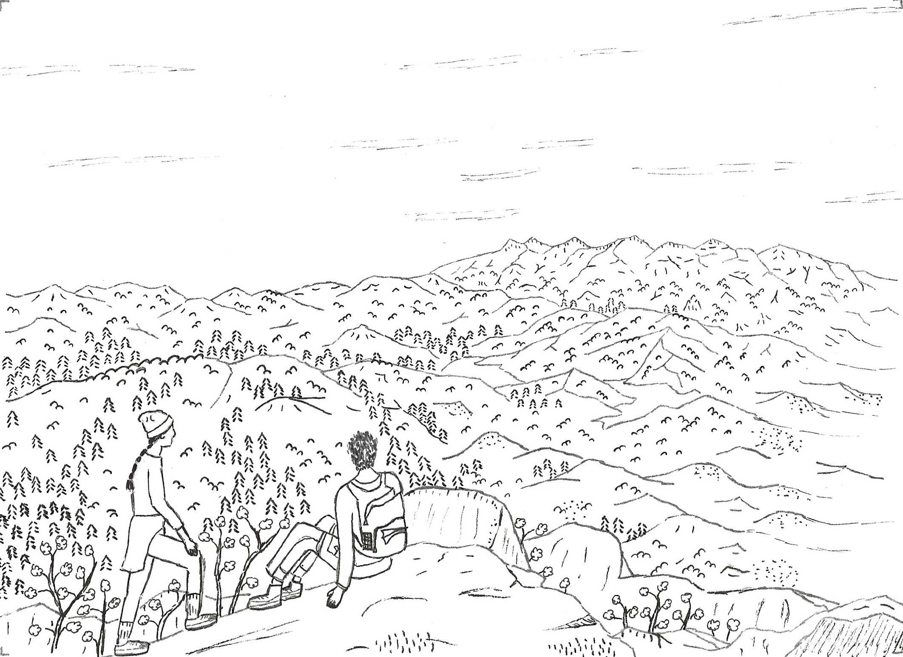An ink drawing on the Pinnacles hike near Lake Arrowhead in California.
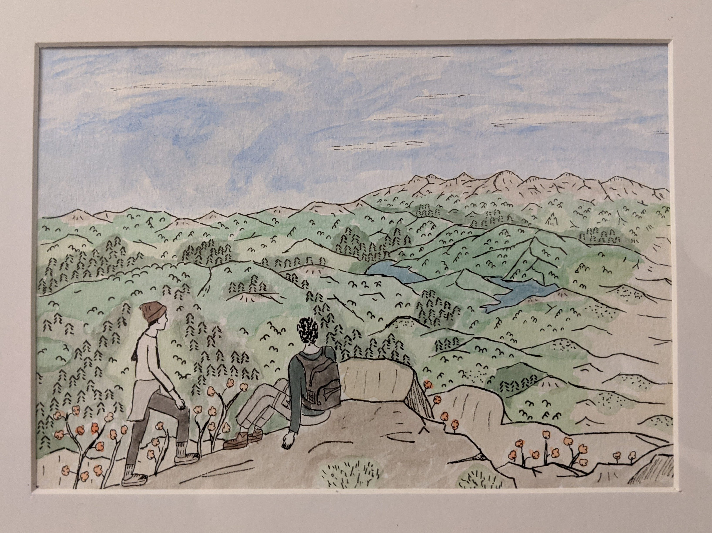The watercolor painting of the previous ink drawing.
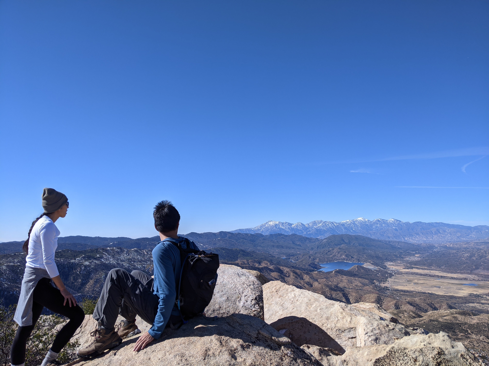The original photo I took that's the basis of the previous painting.
Digital Science Art
With the start of a new chapter in my life, I'm starting a new transition from physical drawing and watercolor to digital drawings and graphic design. Check it out at digital-science-art.tumblr.com.
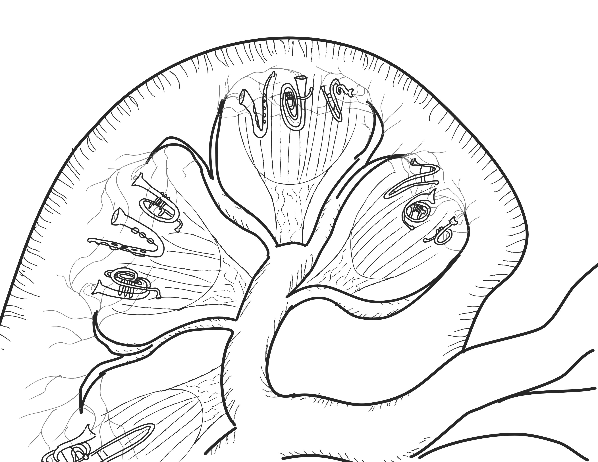Brass Nephrons.
Thoracic Vertebrae Inkblot Test.
Animated Gifs
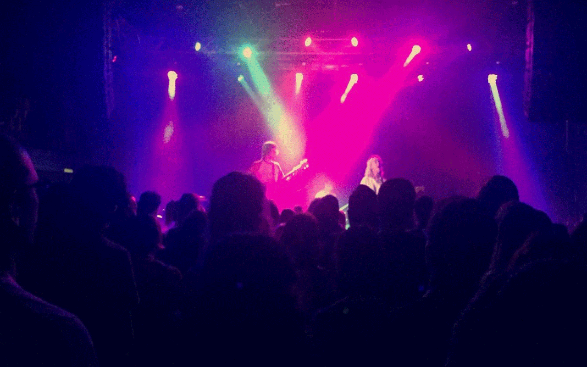The band plays in a concert at Neumos, Seattle.
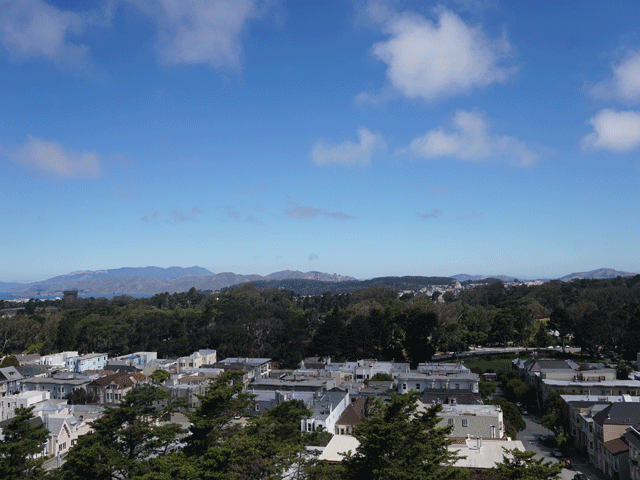A view looking north over the Inner Sunset neighborhood, San Francisco.
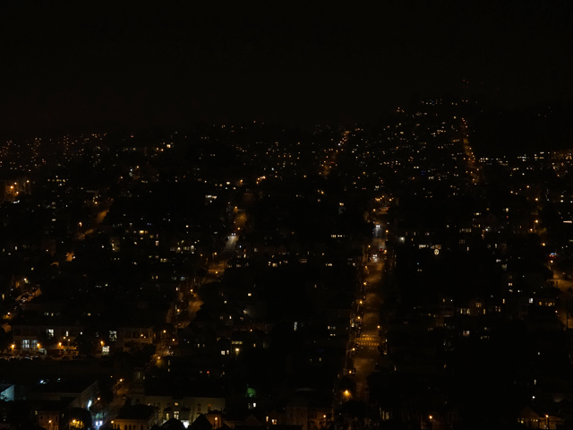Watching the cars driving through the Noe Valley neighborhood, San Francisco.
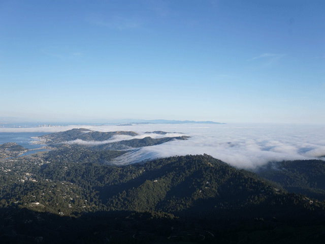The clouds passing over Mt. Tamalpais, California.
Graphic Design
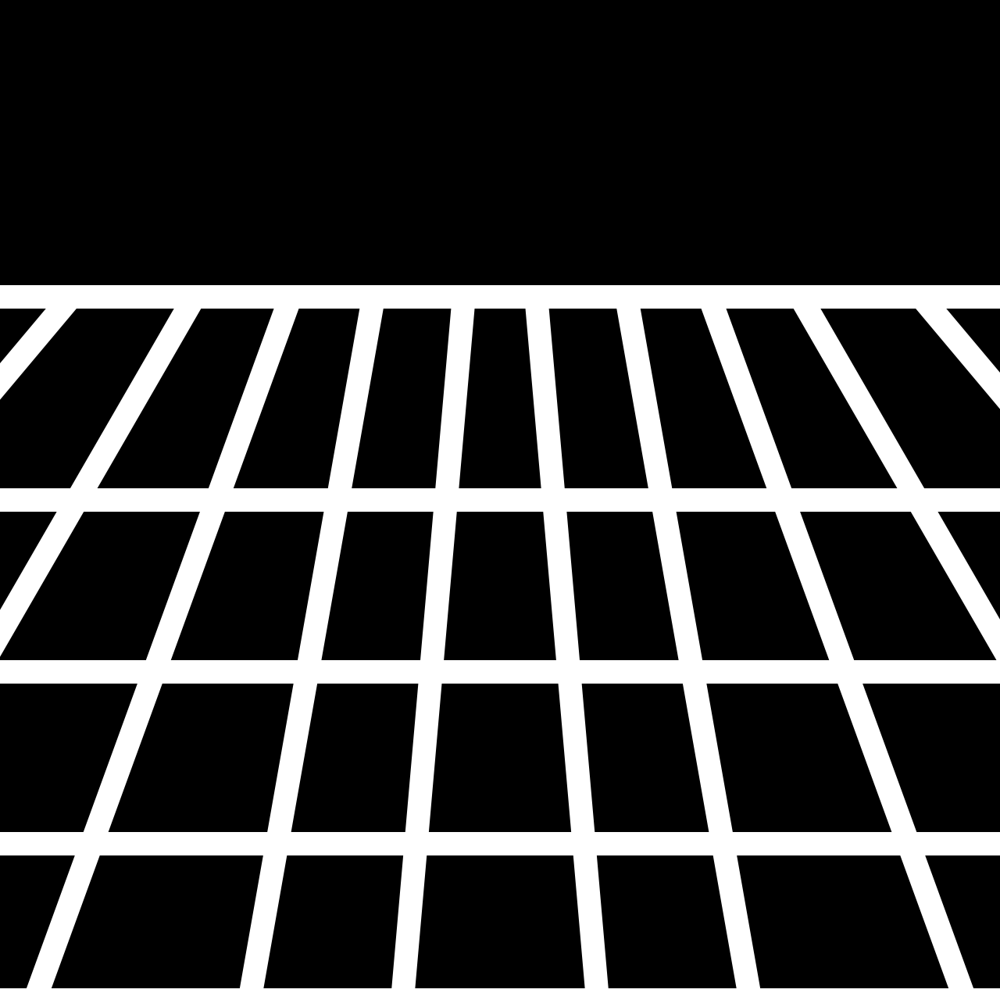Small graphic that can be used as a favicon, made to resemble a classic Gibsonian matrix from cyberpunk culture.
Datumplane is a reference to the Gibsonian matrix found in the Sci-Fi novel Hyperion by Dan Simmons. The icosahedral shape is a reference to the classic capsid of a virus.
The first logo for the NYU BUGS Open Source club in a classic ASCII art style.
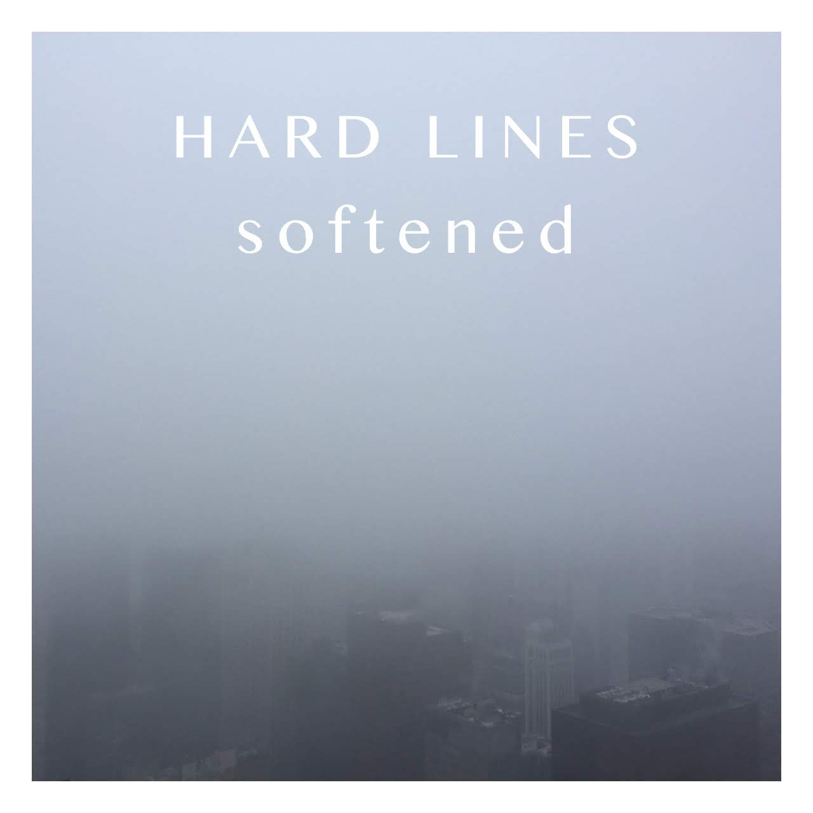A fake album cover inspired by Mogwai's album Hardcore Will Never Die, but You Will. There's an entire subreddit dedicated to this stuff at r/FakeAlbumCovers.
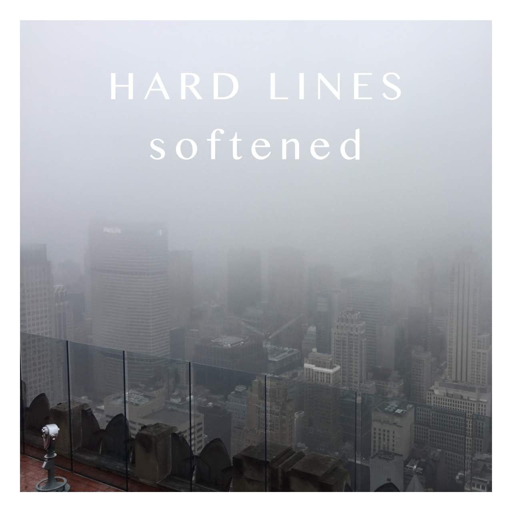Another fake album cover from similar inspirations.